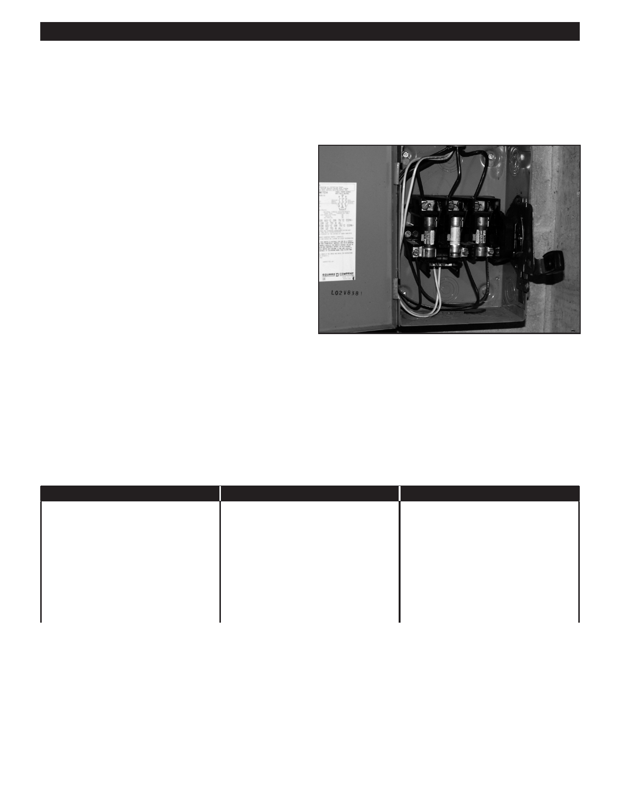

PA RT I C I PA N T R E S O U R C E G U I D E
Main Service Panels, Fuses, and Circuit Breakers
(Continued)
Fuse Panels
Fuse panels are usually found in older apartment buildings.
When the circuit is overloaded, a wire inside the fuse will
melt and open or break the circuit.
Screw-in plug fuses protect 120-volt circuits for lights and
receptacles.
Cartridge fuses protect 240-volt appliance circuits and
the main service panel shut-off.
Inside each fuse is a current-carrying metal alloy ribbon. If a
circuit is overloaded, the metal ribbon melts and stops the
flow of power.
Just like a circuit breaker, each fuse goes with a different
circuit, and circuits should be indexed to make them easier
to locate.
Important: A fuse must match the amperage rating of
the circuit. Never replace a fuse with one that has a
larger amperage rating.
Common Problems And Solutions
When it comes to main service panels, circuit breakers, and fuses, there’s one problem
you’ll see most often.
Problem
Reason
Solution
Tripped circuit breaker or blown fuse.
Overloaded circuit; too many light
1. Move some of the plug-in
fixtures and plug-in appliances on one
appliances to another circuit.
circuit.
2. Reset the breaker or replace the
fuse. (Page 31)
3. If the problem continues there may
be a short circuit in the system: call
an electrician.
30